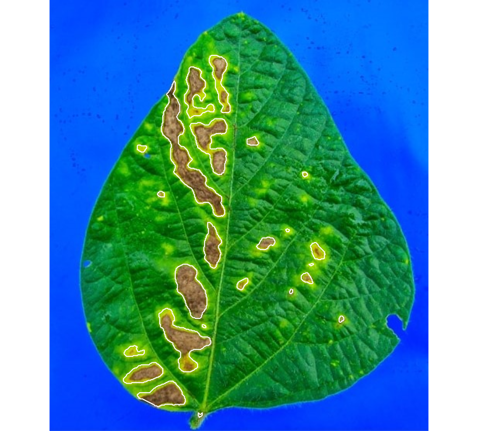
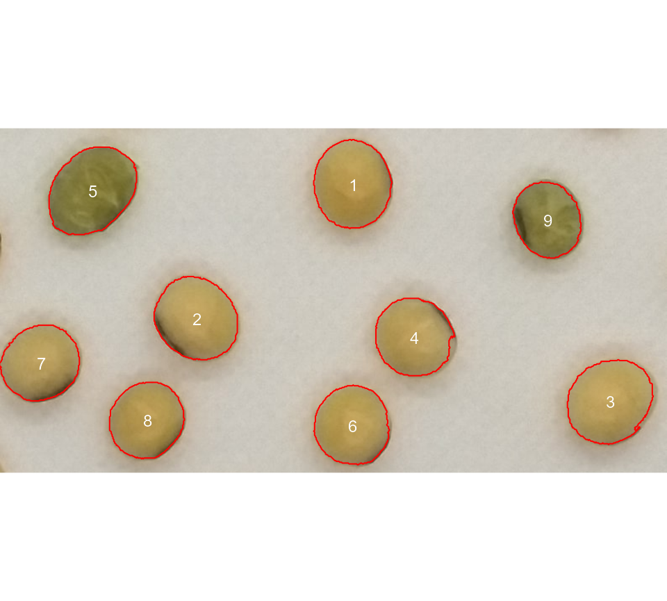
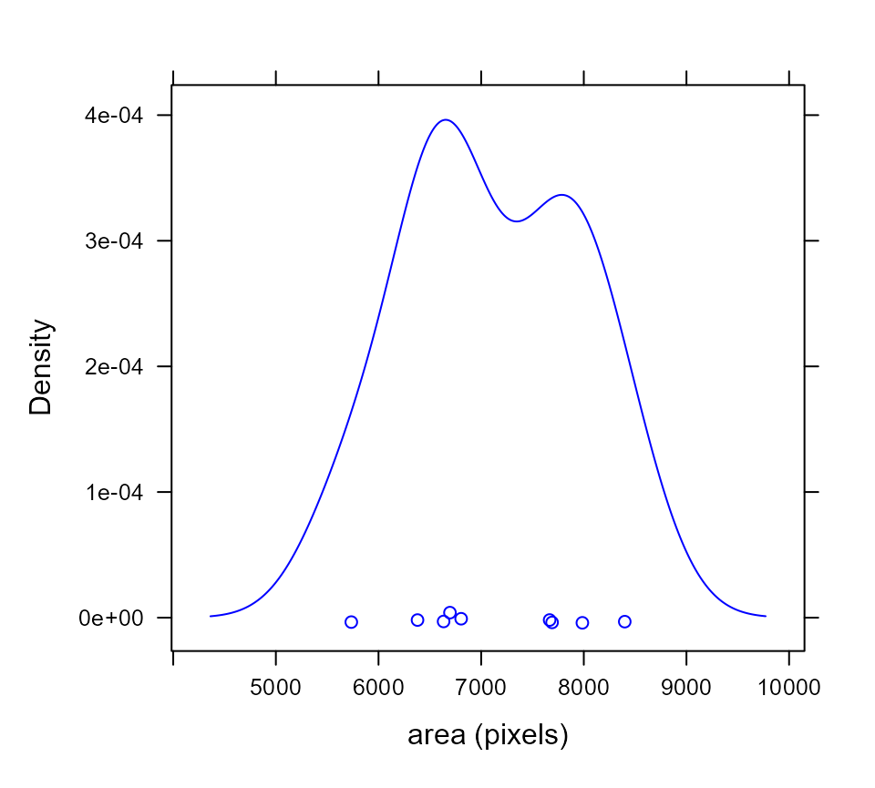

Getting started
pliman (plant image analysis) is designed to analyze plant images, especially related to leaf analysis. You provide color palettes, tell pliman what each one represents, and it takes care of the details. The package will help you to:
- Get object statistics (number, area, perimeter, etc.) with
analyze_objects(). - Measure disease severity with
symptomatic_area(). - Get the RGB values for each object in an image with
objects_rgb(). - Get object measures with
get_measures(). - Plot objec measures with
plot_measures().
Leaf area
The function analyze_objects() can be used to measure the leaf area in an image. The pixel area can be adjusted to metric units (cm) in two ways: (i) Using an object of known area to correct the measures or (ii) knowing the image resolution in dpi (dots per inch).
To show the first approach, first we count the number of objects and plot an object id using the argument marker = "text" of the function analyze_objects(). This allows for the further adjustment of the leaf area using the known object, that in this case is the leaf square, with 4 cm\(^2\).
library(pliman)
# |==========================================================|
# | Tools for Plant Image Analysis (pliman 1.0.0) |
# | Author: Tiago Olivoto |
# | Type 'vignette('pliman_start')' for a short tutorial |
# | Visit 'http://bit.ly/pkg_pliman' for a complete tutorial |
# |==========================================================|
leaves <- image_pliman("la_leaves.jpg")
plot(leaves)
count <- analyze_objects(leaves, marker = "id")
- Adjust the leaf area by the area of the known object
The function get_measures() is used to adjust the leaf area using object 6.
area <-
get_measures(count,
id = 6,
area ~ 4)
# -----------------------------------------
# measures corrected with:
# object id: 6
# area : 4
# -----------------------------------------
# Total : 149.331
# Average : 24.888
# -----------------------------------------
area
# id x y area area_ch perimeter radius_mean radius_min radius_max
# 1 1 537.380 498.981 41.716 41.895 22.161 3.695 2.768 5.279
# 2 2 438.655 165.253 35.724 35.858 19.502 3.386 2.891 4.590
# 3 3 110.862 477.018 31.584 32.438 20.174 3.284 2.389 4.897
# 4 4 178.467 174.227 27.697 28.096 18.157 3.039 2.311 4.405
# 5 5 315.232 434.602 8.608 8.614 9.782 1.664 1.319 2.271
# 6 6 313.445 655.336 4.000 4.008 7.672 1.125 0.929 1.371
# radius_sd radius_ratio diam_mean diam_min diam_max major_axis minor_axis
# 1 21.561 1.907 7.391 5.536 10.558 9.196 5.904
# 2 13.655 1.588 6.772 5.782 9.181 7.891 5.823
# 3 21.404 2.050 6.569 4.779 9.794 7.989 5.207
# 4 17.091 1.906 6.077 4.623 8.810 7.242 5.005
# 5 8.608 1.721 3.328 2.639 4.542 4.095 2.697
# 6 3.862 1.475 2.250 1.859 2.742 2.394 2.215
# eccentricity theta solidity circularity
# 1 0.767 1.538 0.996 1.067
# 2 0.675 -1.533 0.996 1.180
# 3 0.758 1.545 0.974 0.975
# 4 0.723 1.539 0.986 1.056
# 5 0.752 -1.467 0.999 1.131
# 6 0.380 -1.550 0.998 0.854
# plot the area to the segmented image
image_segment(leaves, index = "NB", verbose = FALSE)
plot_measures(area, measure = "area")
When the image resolution is known, we can the image dpi (dots per inch) to correct the pixel units given by analyze_objects() to metric units. The function dpi() can be used to compute the dpi of an image, provided that the size of any object is known. See a brief tutorial here.
get_measures(count, dpi = 84)
# id x y area area_ch perimeter radius_mean radius_min radius_max
# 1 1 537.380 498.981 40.823 40.997 21.923 3.656 2.738 5.222
# 2 2 438.655 165.253 34.959 35.090 19.292 3.350 2.860 4.541
# 3 3 110.862 477.018 30.908 31.743 19.957 3.249 2.364 4.844
# 4 4 178.467 174.227 27.104 27.494 17.961 3.006 2.286 4.357
# 5 5 315.232 434.602 8.424 8.429 9.676 1.646 1.305 2.247
# 6 6 313.445 655.336 3.914 3.923 7.590 1.113 0.919 1.356
# radius_sd radius_ratio diam_mean diam_min diam_max major_axis minor_axis
# 1 21.561 1.907 7.311 5.476 10.445 9.097 5.840
# 2 13.655 1.588 6.700 5.720 9.082 7.806 5.760
# 3 21.404 2.050 6.498 4.727 9.689 7.903 5.151
# 4 17.091 1.906 6.012 4.573 8.715 7.164 4.951
# 5 8.608 1.721 3.292 2.610 4.493 4.051 2.668
# 6 3.862 1.475 2.226 1.839 2.712 2.368 2.191
# eccentricity theta solidity circularity
# 1 0.767 1.538 0.996 1.067
# 2 0.675 -1.533 0.996 1.180
# 3 0.758 1.545 0.974 0.975
# 4 0.723 1.539 0.986 1.056
# 5 0.752 -1.467 0.999 1.131
# 6 0.380 -1.550 0.998 0.854Counting crop grains
Here, we will count the grains in the image soybean_touch.jpg. This image has a cyan background and contains 30 soybean grains that touch with each other.
soy <- image_pliman("soybean_touch.jpg")
plot(soy)
# Count the objects in the image
grains <- analyze_objects(soy)
# Draws the object id (by default)
plot_measures(grains)
Disease severity
The function measure_disease() is used to compute the percentage of symptomatic leaf area in a sample or entire leaf based on provided color palettes samples. A general linear model (binomial family) fitted to the RGB values is used to segment the lesions from the healthy leaf. If a pallet of background is provided, the function takes care of the details to isolate it before computing the number and area of lesions.
The next example computes the symptomatic area of a soybean leaf. The proportion of the healthy and symptomatic areas is given as the proportion of the total leaf area, after segmenting the leaf from the background (blue).
img <- image_pliman("sev_leaf.jpg")
healthy <- image_pliman("sev_healthy.jpg")
symptoms <- image_pliman("sev_sympt.jpg")
background <- image_pliman("sev_back.jpg")
image_combine(img, healthy, symptoms,background)
# Computes the symptomatic area
measure_disease(img = img,
img_healthy = healthy,
img_symptoms = symptoms,
img_background = background,
show_image = TRUE)
# $severity
# healthy symptomatic
# 1 89.12643 10.87357
#
# $shape
# NULL
#
# $statistics
# NULL
#
# attr(,"class")
# [1] "plm_disease"RGB values for objects
The function objects_rgb() can be used to get the Red Green and Blue (RGB) for objects in an image. Here, the RGB for
img <- image_pliman("soy_green.jpg")
# Segment the foreground (grains) using the normalized blue index
# Shows the average value of the blue index in each object
rgb <-
analyze_objects(img,
object_index = "B",
marker = "index")
# Warning: Accepted 'marker' are: {id, x, y, area, area_ch, perimeter,
# radius_mean, radius_min, radius_max, radius_sd, radius_ratio, diam_mean,
# diam_min, diam_max, major_axis, minor_axis, eccentricity, theta, solidity,
# circularity}. Drawing the object id.
# plot the distribution of RGB values of each object
plot(rgb)
Getting help
If you encounter a clear bug, please file a minimal reproducible example on github
Suggestions and criticisms to improve the quality and usability of the package are welcome!